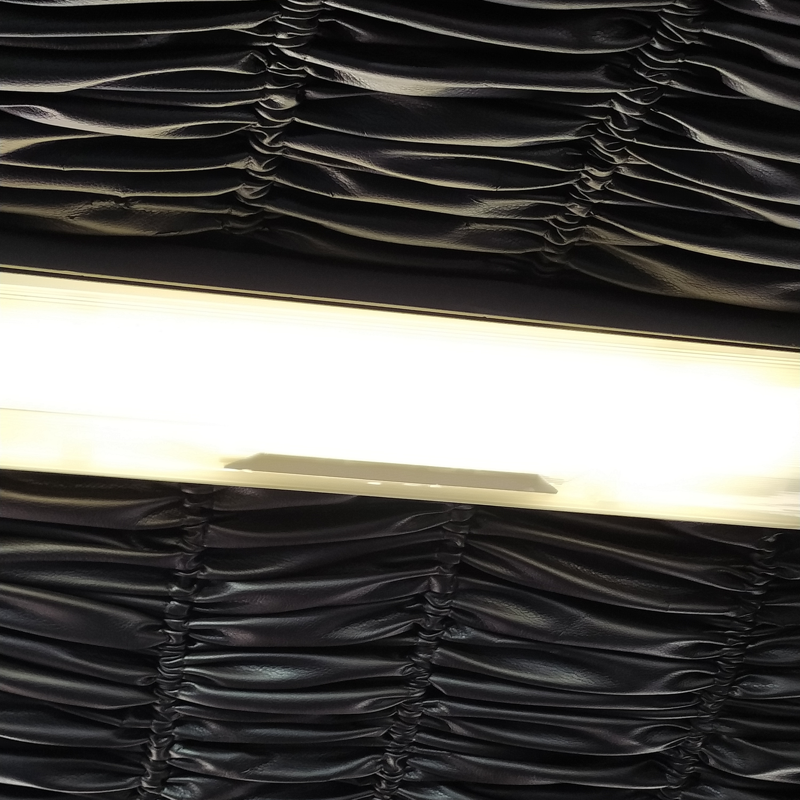
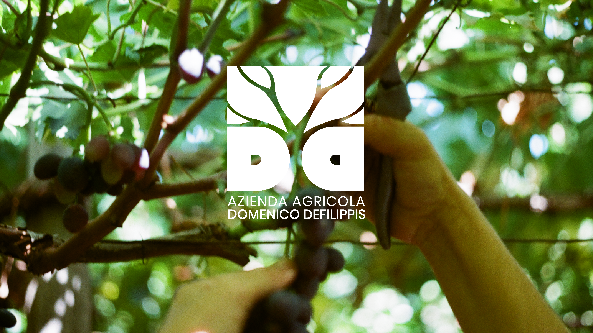
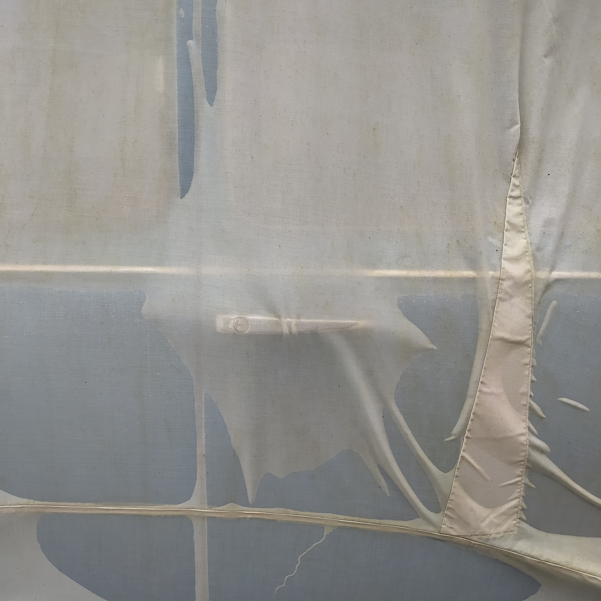
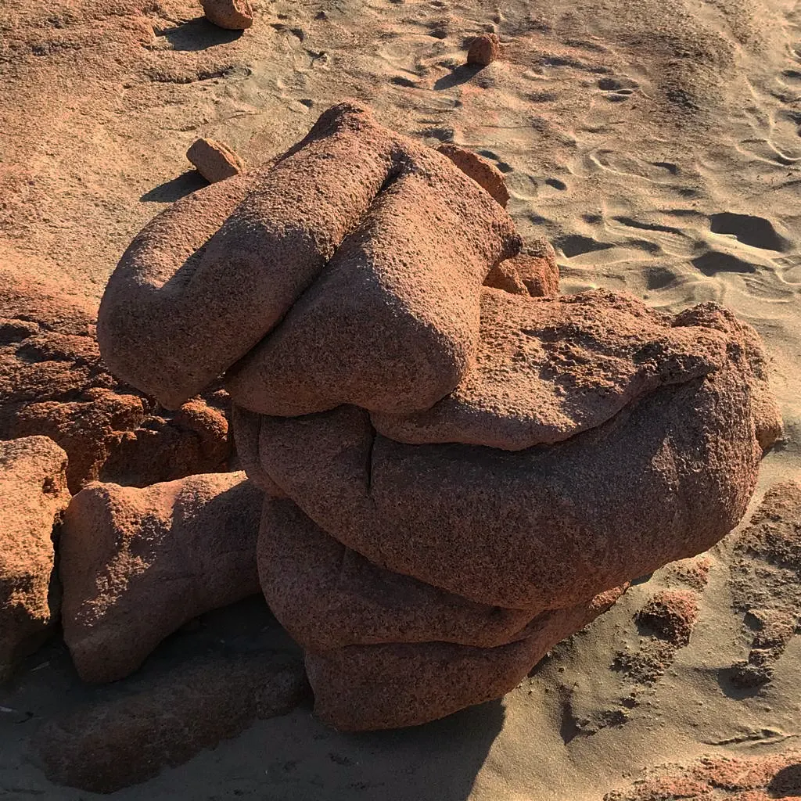
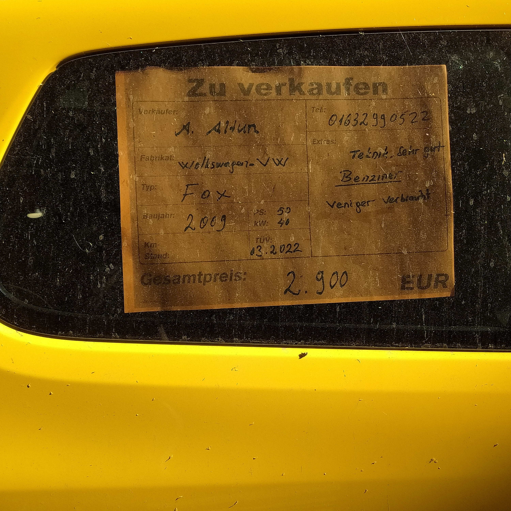
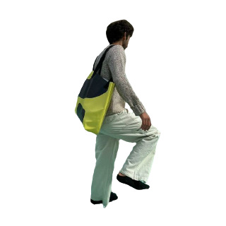
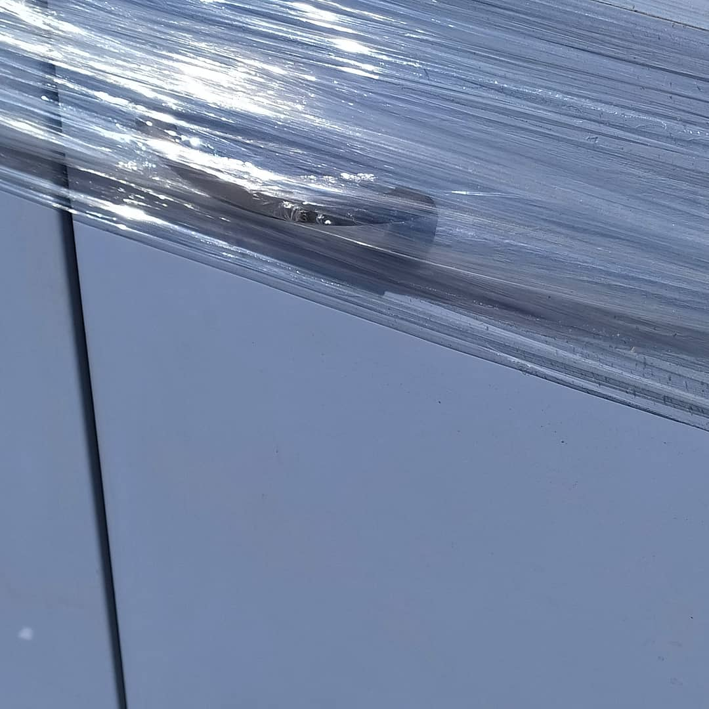

<!DOCTYPE html>
<html>

<head>
  <title>GD</title>
  <meta charset="utf-8">
  <meta name="viewport" content="width=device-width, initial-scale=1.0">
  <!-- this is the bootstrap link -->
  <link href="https://cdn.jsdelivr.net/npm/bootstrap@5.0.2/dist/css/bootstrap.min.css" rel="stylesheet" integrity="sha384-EVSTQN3/azprG1Anm3QDgpJLIm9Nao0Yz1ztcQTwFspd3yD65VohhpuuCOmLASjC" crossorigin="anonymous">
  <!-- this is my CSS -->
  <link href="style.css" rel="stylesheet" type="text/css" />

  <link rel="apple-touch-icon" sizes="180x180" href="/favicon_io/android-chrome-192x192.png">
  <link rel="icon" type="image/png" sizes="32x32" href="/favicon_io/favicon-32x32.png">
  <link rel="icon" type="image/png" sizes="16x16" href="/favicon_io/favicon-16x16.png">
  <link rel="manifest" href="/favicon_io/site.webmanifest">
<body class="body-gallery">

<!-- this is the navbar -->

<!-- this is the navbar -->

<nav class="navbar pb-4 pt-4 fixed-top">  <a href="index.html" class="brand mx-1">
  <div class="projects-back">
     projects</div></a>
   
   <p class="project-name p-medium mb-0">&#128064</p>


   <div class="right-nav-ga">
   <a href="gallery.html" class="text-gallery-nav" style="padding-right: 2vw;">gallery </a>
   <a href="about.html" class="text-right">about</a>
  </div>
</nav>


   
<div class="gallery-page">


<!-- this is the body -->

<div class="app_page1">
    <div class="row ">
        <div class="col-sm-4  text-gallery text-gallery-lef" id="left">

          <div class="img-gallery-alone-first">
            

            </div>


<h1 class="mega-title-gallery">The gallery is a random collection of short stories, unposted work and personal projects</h1>


<div class="img-gallery-alone">
  
  <p>Unoperuno: a small editorial project from Portugal. <br> <span class="underlined"> <a href="https://www.behance.net/gallery/124607977/SARDINE-UNOPERUNO-issue-n-01">Behance project</a> </span>  </p>
  </div>


 

  


       
        

               
      
    
  


          <!-- Eravate vigne -->
            
          <div class="content-gallery">


              <h1 class="title-gallery">Eravate vigne</h1>

            
      
        
              <p> Ve ne state là immobili a ghignare, guardandomi senza dire una parola, mentre vi compiacete della vostra autorità di mostri.Ma un tempo non eravate così. 
                Eravate verdi e rigogliosi, giovani fieri e innamorati.
                Il mercato era dalla vostra parte quando ancora correva nei campi con i calzoni rattoppati e mordeva la vita dall'alba al tramonto.
                Ma tutti i grandi amori giovanili finiscono davanti a grossi seni.
                Da quando ha conosciuto la grande distribuzione, si è perso nelle sue succose profondità e si è illuso di poter essere onnipotente.E d'un tratto per lui eravate meno di zero. A nulla servivano i vostri pianti sulle panchine di pietra del parco. Era diventato insensibilea tutto e tutti. 
                Avete provato a resistere, illudendovi per anni che la passione vi bastasse, che quei pochi soldi che vi davano fosseroabbastanza per campare. Ora provate a guardarvi negli occhi.Siete diventati gomitoli disordinati di reti e rami secchi. Il vostro letto di morte è terra brulla, quasi marziana. 
                Ma a volte ce l'avete un po di nostalgia anche voi? A volte pensate
                a quando eravate alberi dalle braccia contorte e la pelle secca, pali ritti, filari freschi e ordinati? Vi ricordate le facce di tutte le persone che vi hanno abitati? E di chi alle 4 di mattina vi veniva a svegliare toccandovi delicatamente le foglie larghe e poi vi rimboccava le coperte per
                proteggervi da vento e grandine? Le riguardate le fotografie di quell'uva soda e gonfia che ogni estate vi affollava? E non sentite sulla pelle quel fastidio pungente delle forbici per la vendemmia
                che vi liberavano dalla fatica di quel peso etilico?
                Eravate vigne. Ora siete mostri.  </p>
              
              </div>

           
                <div class="img-gallery-alone">
                  <video src="media/gallery/1.mp4" class="img-fluid" autoplay playsinline loop muted></video>
                  <p>Event planning and graphics for La Marittima <br> <span class="underlined"> <a href="https://www.instagram.com/lamarittima/">IG Page</a> </span>  </p>
                  </div>
    


              <div class="content-gallery">
                <h1 class="title-gallery">Le biciclette</h1>
          
                <p> Tornano a casa intonando in coro versi gracchianti e sgraziati. Respirano a pieni polmoni il petricore dell'asfalto umido. Sfidano il freddo con cappelli buffi e guanti troppo grandi ma il grecale entra negli occhi, arrossiscono le guance. La notte buia non fa più paura.
                  La città si china per mostrare le linee del suo palmo, le mattonelle lucide, le sue piazze vuote e i deliri degli ubriachi sulle panchine sole. Milano, titanica e rombante, in questi istanti gli appartiene. E si dimenticano di essere fiato
                    </p>
                
                </div>


                <div class="img-gallery-alone">
                  <video src="media/gallery/sagome.mp4" class="img-fluid" autoplay playsinline loop muted></video>
                  <p>Strategy and social media kit for Sagome Teatro </span> </p>
                  </div>

                <div class="img-gallery-alone">
                  <video src="media/gallery/coding.mp4" class="img-fluid" autoplay playsinline loop muted></video>
                  <p>Creative Coding exercise.  <span class="underlined"> <a href="https://drawwithcode.github.io/2021-03-Bepsdef/">Website</a> </span> 
                  </p>
                  </div>
      


                   <!-- Autista-->
                   <div class="content-gallery">
                <h1 class="title-gallery">L'autista</h1>
                <p> L'autista è uno di quegli uomini che parlano tanto, scegliendo precisamente le parole, dicendo tutte quelle necessarie, non omettendo niente. Evita anche gli apostrofi, le parole tronche e sostituisce diadainconsupertrafra con altre parole più lunghe anche solo di una lettera. È una tombola di storie. Apre la sua sacca di stoffa ed estrae l'incontro mistico con il rastarasta, il rapporto con il suo cane e il dialetto del suo collega orsarese. Non fai in tempo a segnarli sulla tua cartella da 50cent che subito ne tira fuori un'altro e grida "il tuo cognome è uguale a quello del figlio del cugino di mio padre". Ambo. 
                  Dispendia consigli in modo assiduo, a tratti logorroico, al suo autista compagno di viaggio. Sarà il suo primo giorno e ancora non sa cosa significa guidare in Aerobus. Non una cosa da poco, un bus con il suffisso -aero. Ha il tipico profumo da uomo. Un muschio invecchiato. Tutti gli uomini dopo i 50 anni portano nel taschino dei pantaloni un campione di profumo al muschio. È a questo che serve, quel taschino. 
                  È una brava persona, un amico fedele, uno di quelli che propone ogni venerdì il pub agli amici e ordina sempre della arachidi insieme alla birra. </p>
              
                </div>


            


              
              
              </div>


                


        <div class="col-sm-4 text-gallery text-gallery-center" id="middle">


          <div class="img-gallery-alone-first">
            <video src="media/gallery/cazzoz.mp4" class="img-fluid" autoplay playsinline loop muted></video>
            <p>Pump31 | Handmade pvc bag  </p>
            </div>


 <!-- sesetta-->
 <div class="content-gallery">
 <h1 class="title-gallery">Sesetta</h1>
        <p> Nella baia era entrato un maestrale fresco. Faceva vibrare la superficie del mare in modo così dolce e delicato da far addormentare persino le occhiate, che mai avevano chiuso occhio per riposare da quando erano state messe al mondo. C'era una strana gioia diffusa e segreta, un entusiasmo palpabile, che alle volte veniva fuori in canti d'amore animali. Le foglie si muovevano dolci, i ricci gridavano al sesso. Sesetta risalì dalla spiaggia grazie a un corridoio naturale di sassi e sabbia, facendo attenzione a non rovinare il suo costume a righe blu Givenchy, appena arrivato dalla Francia, l'invidia di tutte le spiagge. All'improvviso, tra il sipario di pini, pungenti e fitti come i capelli a spazzola di suo marito, intravide un triangolo di mare. Era di un blu lucente, brillava di festa, sembrava fosse stato fatto solo per lei. Si fermò di scatto e disse "qui costruiremo la nostra casa". E così fu. 
La casa veniva su in fretta. Bernardino cercava di accontentare tutte le richieste della moglie, che erano delle più assurde e stravaganti, sempre diverse e confuse. Ogni settimana sfornava idee calde e impensabili che spiazzavano tutti i muratori. 
E così venivano costruite stanze su archi catalani, scale di ottone dentro camini freddi, cucine marmoree a mezz'aria, bagni in cui l'acqua scorreva verso l'alto e letti a castello che si intrecciavano fino a fare le radici nel pavimento. In poco tempo la casa era diventata così fitta di stanze, corridoi e porte, che nessuno era in grado di entrare e trovare l'uscita. 
Quei pochi temerari che provarono a sfidare la fitta geografia della casa, forse per l'innocenza della giovinezza, forse per l'adrenalina dell'avventura, rimasero imprigionati nel labirinto cementoso. Ancora oggi, a volte, si sentono rumori di biglie, saltelli di piedi piccoli e pianti sommessi.
Fu necessario chiamare Nuccio, il miglior geometra di Cagliari. Armato di compassi di piombo, bussole che indicavano poli non terrestri, carte astrali e strani tubolari in ferro che vibravano alla presenza di acqua, riuscì a disegnare, dopo 9 mesi di duro lavoro, una mappa della casa. Da quel giorno, nessuno osa entrare nella casa di via Lattea senza senza averne una nel taschino. </p> 
</div>

<div class="img-gallery-alone">
  
  </div>


<div class="img-gallery-alone">
  <video src="media/gallery/generact-diaspore.mp4" class="img-fluid" autoplay playsinline loop muted></video>
  <p>Diaspore: Cosa cerchiamo altrove? Touchdesigner visuals</p>
  </div>


                  <!-- Finocchi-->
                  <div class="content-gallery">
          <h1 class="title-gallery">I finocchi</h1>
      <p>   D’inverno il campi del sud vengono invasi da piante di finocchio. Si appropriano con spirito anarchico e fiera prepotenza di tutte le porzioni di terra disponibili, delle cunette sporche delle strade secondarie di provincia, degli angoli nascosti di terrazzi non curati.  A guardarli, paiono peli pubici di adolescenti che non hanno ancora conosciuto la vergogna della nudità. Quando li si sente gridare a gran voce non bisogna preoccuparsi: inveiscono contro i giovani campi di grano adiacenti. Si dice siano in costante disputa su chi abbia il verde più saturo e intenso ma probabilmente la ragione di fondo è l’antica e interminabile lotta di classe con i latifondisti. Hanno un odore così intenso che molti contadini, mentre camminano sui loro tratturi, si ritrovano all’improvviso in negozi di caramelle per la gola, in cui l’odore umido della terra rossa di ferro si mischia a quello fresco del sedano o vagamente fastidioso dell’anice. I finocchi si raccolgono con un coltello che pare quello di un macellaio. Ha una lama lunga con la punta quadra per penetrare il terreno e togliere loro la vita con la stessa freddezza e distacco di tiratori scelti della marina statunitense. Quando vengono tagliati, prima di stramazzare al suolo e tacere per sempre, inneggiano a Dio e al Regno di Napoli. I loro resti pubici giacciono sconfitti sui campi per mesi, colorandoli di verde chiaro. Diventeranno cibo per corvacci, gabbiani e per quei pochi eletti che li tritano con i pomodori secchi per cucinare bizzarre paste al pesto. </p> 
    </div>


    <div class="img-gallery-alone">
      <video src="media/gallery/myda2.mp4" class="img-fluid" autoplay playsinline loop muted></video>
      <p>Myda: shaping exp with blender.  <span class="underlined"> <a href="https://www.instagram.com/tilde_sign/"> IG Page</a> </span>  </p>
      </div>

      <div class="img-gallery-alone">
        <video src="media/gallery/myda1.mp4" class="img-fluid" autoplay playsinline loop muted></video>
        <p>Myda: shaping exp with blender.  <span class="underlined"> <a href="https://www.instagram.com/tilde_sign/"> IG Page</a> </span>  </p>
        </div>

                      <!-- pausa-->
                      <div class="content-gallery">
                        <h1 class="title-gallery">15 minuti</h1>
                    <p>  15 minuti di pausa, annuncia l'autista dall'altoparlante. Scendo a passo lento, l'autogrilll è sempre sveglio e iperattivo. Piscio.
                      È ancora presto per risalire. Mi guardo attorno. Siamo tutti qui fuori, immobili e distanti. I nostri occhi stanchi non si incrociano mai, fissano punti non precisati.
                      Solo il mio compagno di sedile a volte sembra guardami timido. È un gesto quasi invisibile, uno slancio incerto per chiedermi "come ti chiami? Dove vai?". Ma non succede. Non succede nulla. Restiamo tutti immobili, con le braccia conserte a guardare il pullman, o le stelle, o niente.
                      E sono ancora le 3</p> 
                  </div>

                  <div class="img-gallery-alone">
                    
                    </div>
          
    <div class="content-gallery">
          <!-- danimarca-->
          <h1 class="title-gallery">In Danimarca</h1>
        <p> Le persone odorano di truciolato e welfare,
i boschi sono precisi e ordinati come filari di insalata. I cavalli sono bendati, i capannoni industriali sono dei monoliti svizzeri e Legoland è un culto. I corvi sono i nuovi piccioni e  suonano violini scordati come gabbiani. 
Le case hanno i nomi e grandi finestre. I fiordi sono confusi e il mare è nero come i tetti lucidi delle case a punta. I taxi sono blu metallizzato opaco e grosse femmine nitriscono nei bar del centro. Nel porto si pescano bastoncini findus. Una ragazza in motorino sulla pista ciclabile stava per investirmi, ma ero io nel torto. 
Gli yogurt si vendono in brick e ci sono due biciclette ogni tre patate. Pilastri con la pancetta dormono sotto piedi arcobaleno e foche di carbone si travestono da parentesi tonde. </p> 
</div>


<div class="img-gallery-alone">
  
  <p>Logo for Azienda Agricola Defilippis <span class="underlined">  </p>
  </div>


 <!-- fine-->
 <div class="content-gallery">
  <h1 class="title-gallery">Fine</h1>
         <p> Prendere coscienza di essere niente. Canne integre solo perché il vento batte sulle altre. E vederne sempre più spezzarsi attorno. Fare a pugni come canaglie con quella fragilità che ci sta attaccata alle ossa. Credere di aver vinto e ritrovarsi immersi nei fumi bianchi della leggerezza di sempre, che forse è l'unica cosa che ci tiene in vita, o almeno ci fa dimenticare che cos'è e ci fa andare a letto sereni </p>
</div>


<div class="img-gallery-alone">
  
  </div>


<div class="img-gallery-alone">
  <video src="media/gallery/molino.mp4" class="img-fluid" autoplay playsinline loop muted></video>
  <p>Communication campaign for Molino Benini</p>
  </div>


        </div>


        <div class="col-sm-4 text-gallery text-gallery-right" id="right">

        <div class="content-gallery">

 

           <h1 class="title-gallery">  Maternità Bestiaria</h1>
          <p>Le luci della città ormai dormono, si vede quasi l'Orsa maggiore, ecco il carro. C'è un silenzio di piccoli suoni. Frasche secche si spezzano appena, fischiettii soffusi intonano ritmi sconosciuti e sempre uguali. 
            Novaltera è la valle più fredda del Passo Olindi, ma non stanotte. Un tepore sconosciuto si è diffuso tra gli alberi, corre lungo la valle e risale sulle montagne vicine. Porta con sé uno strano odore, quasi fosse latte caldo, lenzuola pulite, o pane appena sfornato. 
            Nessuno degli abitanti di Almese ha resisito alla curiosità di sapere da dove arrivi. Chi si è svegliato da sonni profondi, chi ha interrotto il coito e l'amore, chi la sua partita notturna di solitario. Seguono tutti il tepore profumato. 
            La ricerca ha preso la forma di un pellegrinaggio, o una caccia ai funghi. Si cammina in fila e lentamente lungo le vie scoscese della montagna. Quando il tepore si fa sentire, si accelera il passo. Quando scompare ci si ferma e si riposa. A volte si torna indietro, altre ci si gira su se stessi e si ricomincia a camminare.
            Il calore si fa intenso, riempie i polmoni. Ci siamo, dev'essere qui, sussurra la folla. La voce corre lungo la fila infinita ma in realtà non si vede nulla di nuovo: né un essere di altri mondi né una misera pagnotta. Niente di niente. 
            Solamente si vedono, tra gli alberi alti, vicino una roccia di muschio, un animale, forse due. Devono essere dei cinghiali, a giudicare da quel naso gigante, le zanne morbide, gli occhi piccoli e chiusi.  Si amano in una piccola mezzaluna di terra fresca, scavata da zampe stanche, profonda quanto basta per ripararsi dal vento. 
            Il cucciolo, disteso a forma di C, dorme adagiato contro il ventre gonfio della madre. Il respiro gli accarezza la testa, le mammelle calde gli solleticano la schiena. 
            "Spariamogli e mangiamoceli. Tanto qui non c'è niente da trovare' grida una voce dal fondo. 
            
            È una bella notte di festa. Tutti mangiano e bevono contenti, dimenticandosi tra vino e costine, per cosa si erano destati dal sonno.</p>
          </div>

          <div class="img-gallery-alone">
            <video src="media/gallery/out-3.mp4" class="img-fluid" autoplay playsinline loop muted></video>
            <p>Stopmotion animation + AI  <br> <span class="underlined"> </span> </p>
            </div>


          <div class="img-gallery-alone">
            <video src="media/gallery/marittima.mp4" class="img-fluid" autoplay playsinline loop muted></video>
            <p>Lungomare Immorale: houseparty planned for LaMarittima <br> <span class="underlined"> <a href="https://www.instagram.com/lamarittima/">IG Page</a> </span> </p>
            </div>


          <div class="content-gallery">
            <h1 class="title-gallery"> Casa</h1>
           <p>Casa è stanca. Va a dormire al tramonto e si sveglia all'alba. La sua chioma folta non c'è più. Al suo posto un manto di terra grigia. La pelle ha perso il suo biancore accecante. Nascono crepe silenziose e profonde.
            Casa è stanca ma a te non importa.
            Ci sei entrata prepotente. Con tutta la forza dell'imprevisto. L'hai illuminata di una luce nuova con i tuoi occhi grandi, le grida notturne e i sonni improvvisi. Casa sta cedendo ma a te non importa. Le hai dato un nuovo centro di gravità, fondamenta impossibili. Casa, inerme allo scalfire duro del tempo, mi era diventata amara.
            Ora qualcosa è cambiato.
            Devo andare ma voglio già tornare.
            E forse, per sempre</p>
           </div>

           <div class="img-gallery-alone">
            
            </div>

          <div class="content-gallery">
            <h1 class="title-gallery"> Umido</h1>
           <p>Avvolge il pub come fosse nebbia. Prende il mio posto a tavola. Mi costringe a prendere un'altra sedia, mettermi da parte. Non posso fare altro che soffermarmi su coppie languide, far girare nervosamente il menù tra le mani.
            Alle battute non rido, o lo faccio male. Ho solo parole cieche, inutili tentativi di non essere più assente, di riprendermi il mio spazio, di dire questo momento è mio, lasciami stare.
            Arriva sempre quando le cose finiscono. A volte si presenta proprio prima che tu esca di casa, senza neanche avvisarti.
            È il fetore umido della nostalgia.</p>
           </div>

           <div class="img-gallery-alone">
            <video src="media/gallery/mauro.mp4" class="img-fluid" autoplay playsinline loop muted></video>
            <p>Graphics for @okay_genz <span class="underlined"> <a href="https://www.instagram.com/okay_genz/">IG Page</a> </span> </p>
            </div>
 
          <div class="content-gallery">
            <h1 class="title-gallery"> Lucky star</h1>
           <p>Una pioggia fitta e sottile come aghi di pino mi bagna la fronte, il balaclava non basta più. Le pastiglie dei freni sono state levigate dall'acqua. Quando le stringo scivolano come la kostner sui cerchi arruginiti. Non potrò frenare. Tutte le case dormono. A illuminare Affori ci pensano discutibili luci di Natale. Le strade della periferia sono piccole e nascoste, mi coccolano fino al ritorno a casa. Quando la porta si è chiusa ho intuito per un attimo occhi tristi. Eravamo sconosciuti. Ora posso chiamarli amici.</p>
           </div>
  
           <div class="img-gallery-alone">
            
            </div>

            <div class="img-gallery-alone">
              
              <p>This is me wearing Nina | Handmade pvc bag </p>
              </div>
          

           <div class="content-gallery">
            <h1 class="title-gallery"> La Marittima</h1>
           <p>Venerdì. Sono in piccionaia. La chiamano così perché dentro vi si sta come uccelli, attaccati con gli artigli ai banchi a cercare disperatamente aria e luce. Il sole è sparito dietro i tralicci nervosi della vecchia Bovisa industriale. Sono esausto. I miei occhi sono rosso coca. Incapace di fissare un punto per più di 3 secondi, li sbatto continuamente, come una falena eccitata da voltaggi esagerati. Guardo l’orologio, 19:00. Tra un’ora arrivano quelli di zero. Cazzo. Mi alzo di colpo, chiudo il pc, lancio la schiscia nello zaino e, con voce stanca e solenne, come un pretino estenuato dai canti neocatecumenali, dico ai miei amici: “La settimana è finita. Andiamo in pace”. Mi precipito fuori dal B2 e monto goffamente sulla mia rugginosa ma lucente Legnano blu, occasione dell’eccentrico mercatino della domenica. Mancano le ultime cose per la festa e tocca a me comprarle. Sarà una corsa contro il tempo, devo essere veloce almeno quanto Pantani. Mi lancio verso Bausan. Giro attorno alla piazza sfidando il tram in corsa e parcheggio la mia bici al primo semaforo disponibile. Entro in ferramenta. Buonasera, c’è nessuno? Tra viti, chiavi inglesi, funi e cianfrusaglie senza tempo, spunta una signora sulla sessantina con uno sguardo d’amore e sorpresa “Ma certo mi dica pure, che cosa desidera?”  Compro lo spago e mi precipito fuori, accompagnato dal “buona serata” dolce della proprietaria.
            In 3 minuti sono dentro una piccola cartolibreria, un tempo paradiso dei figli degli operai del vapore, ora una piccolo anfratto di legno caldo dagli oggetti impolverati. “Vorrei della carta velina”. Chissà cosa pensa quando mi sente chiedere, ogni mese, due fogli, uno verde e uno rosso. Forse che mi piace il decoupage. Invece mi piacciono le feste, e le luci colorate. Chiudo gentilmente la porta del negozio e rimonto in sella.Devo stampare gli adesivi. Non c’è tempo. Costeggio i binari, mi affianco al tram, prendo una stradina silenziosa e mi ritrovo ai margini del quartiere, sul rettilineo che costeggia la ferrovia. L’autostrada della Bovisa mi permette di prendere velocità, di sfidare il treno per Malpensa. Arrivo al confine con Dergano, terra amica. 
            Mi inoltro nella zona pedonale e tutto cambia. Dal freddo industriale del rettilineo, mi ritrovo nel centro caldo accogliente di un paese. Mi guardo attorno. Fuori dal bar, milanesi vecchi come la madonnina giocano a carte, gonfi di spritz senza Aperol. Muratori sporchi di gesso mostrano fieramente,  a piacenti donne, come hanno ristrutturato il bar. Un deliveroo, con un motorino d’altri tempi, salta rampante sul marciapiede e urla Paolooooo. Bambini esagitati giocano a pallone, scappano dai genitori, mi passano tra le gambe. Dall’altro lato della strada sfilano le più belle del paese. Uè Maria Ciao Mari. E volano baci. Vorrei rubarmene uno e tenerlo come souvenir. 
            Rinsavito da questo trascinante teatro urbano, mi ricordo degli sticker. Mi fiondo in copisteria, l’unica ancora aperta alle 7:30 del venerdì. “Dovrei stampare degli adesivi. A4.” I fogli caldi e collosi escono dalla stampante. “La Mesopotamia di Milano. cos’è?” mi chiede il tipografo con voce sospettosa.È casa mia. La chiamiamo cosi, noi. É Mesopotamia perché è terra fertile. È la Milano viva, quella sporca, quella giovane, quella etilica. </p>
           </div>

          
           <div class="img-gallery-alone">
            
            </div>

            
        </div>
    </div>
  </div>
</div>


<!-- this is the script -->

<script src="https://cdn.jsdelivr.net/npm/bootstrap@5.0.2/dist/js/bootstrap.bundle.min.js" integrity="sha384-MrcW6ZMFYlzcLA8Nl+NtUVF0sA7MsXsP1UyJoMp4YLEuNSfAP+JcXn/tWtIaxVXM" crossorigin="anonymous"></script>
<script src="https://code.jquery.com/jquery-3.2.1.slim.min.js" integrity="sha384-KJ3o2DKtIkvYIK3UENzmM7KCkRr/rE9/Qpg6aAZGJwFDMVNA/GpGFF93hXpG5KkN" crossorigin="anonymous"></script>
<script src="https://cdnjs.cloudflare.com/ajax/libs/popper.js/1.12.9/umd/popper.min.js" integrity="sha384-ApNbgh9B+Y1QKtv3Rn7W3mgPxhU9K/ScQsAP7hUibX39j7fakFPskvXusvfa0b4Q" crossorigin="anonymous"></script>


</body>
</html>
